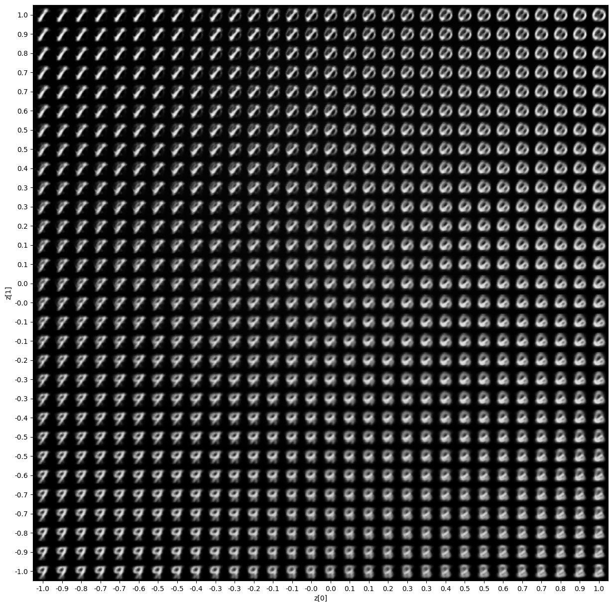

Variational Autoencoder¤
In this example we will be implementing a variational autoencoder using distreqx.
Reference
@inproceedings{kingma2014auto,
title={Auto-encoding variational {B}ayes},
author={Kingma, Diederik P and Welling, Max},
booktitle={International Conference on Learning Representations},
year={2014},
}
import equinox as eqx
import jax
import jax.numpy as jnp
import matplotlib.pyplot as plt
import optax
import tensorflow_datasets as tfds
from tqdm.notebook import tqdm
from distreqx import distributions
First, we need to create a standard small encoder and decoder module. The shapes are hard coded for the MNIST dataset we will be using.
class Encoder(eqx.Module):
encoder: eqx.nn.Linear
mean: eqx.nn.Linear
std: eqx.nn.Linear
def __init__(self, key, input_size=784, hidden_size=512, latent_size=10):
keys = jax.random.split(key, 3)
self.encoder = eqx.nn.Linear(input_size, hidden_size, key=keys[0])
self.mean = eqx.nn.Linear(hidden_size, latent_size, key=keys[1])
self.std = eqx.nn.Linear(hidden_size, latent_size, key=keys[2])
def __call__(self, x):
x = x.flatten()
x = self.encoder(x)
x = jax.nn.relu(x)
mean = self.mean(x)
log_stddev = self.std(x)
stddev = jnp.exp(log_stddev)
return mean, stddev
class Decoder(eqx.Module):
ln1: eqx.nn.Linear
ln2: eqx.nn.Linear
def __init__(self, key, input_size, hidden_size, output_shape=784):
keys = jax.random.split(key, 2)
self.ln1 = eqx.nn.Linear(input_size, hidden_size, key=keys[0])
self.ln2 = eqx.nn.Linear(hidden_size, output_shape, key=keys[1])
def __call__(self, z):
z = self.ln1(z)
z = jax.nn.relu(z)
logits = self.ln2(z)
logits = jnp.reshape(logits, (28, 28, 1))
return logits
Next we can construct the VAE object. It consists of an encoder and decoder, the encoder provides the mean and variance of the multivariate Gaussian prior. The output of the decoder represents the logits of a bernoulli distribution over the pixel space. Note that the Independent here is a bit of a legacy artifact. In general, distreqx encourages vmap based approaches to distributions and offloads any batching to the user. However, it is often possible to implicitly batch computations for certain disributions (sometimes even correctly). Independent is merely a helper that sums over dimensions, so even though we don't vmap over the bernoulli (like we often should), we can still sum over batch dimensions (since the event shape of a bernoulli is ()).
class VAEOutput(eqx.Module):
variational_distrib: distributions.AbstractDistribution
likelihood_distrib: distributions.AbstractDistribution
image: jnp.ndarray
class VAE(eqx.Module):
encoder: Encoder
decoder: Decoder
def __init__(
self,
key,
input_size=784,
latent_size=10,
hidden_size=512,
):
keys = jax.random.split(key)
self.encoder = Encoder(keys[0], input_size, hidden_size, latent_size)
self.decoder = Decoder(keys[1], latent_size, hidden_size, input_size)
def __call__(self, x, key):
keys = jax.random.split(key)
x = x.astype(jnp.float32)
# q(z|x) = N(mean(x), covariance(x))
mean, stddev = self.encoder(x)
variational_distrib = distributions.MultivariateNormalDiag(
loc=mean, scale_diag=stddev
)
z = variational_distrib.sample(keys[0])
# p(x|z) = \Prod Bernoulli(logits(z))
logits = self.decoder(z)
likelihood_distrib = distributions.Independent(
distributions.Bernoulli(logits=logits)
)
# Generate images from the likelihood
image = likelihood_distrib.sample(keys[1])
return VAEOutput(variational_distrib, likelihood_distrib, image)
Now we can train our model with the standard ELBO. Keep in mind, here we require some vmaping over the distribution, since we now have an additional batch dimension (that we do not want to have Independent sum over).
def load_dataset(split, batch_size):
ds = tfds.load("binarized_mnist", split=split, shuffle_files=True)
ds = ds.shuffle(buffer_size=10 * batch_size)
ds = ds.batch(batch_size)
ds = ds.prefetch(buffer_size=5)
ds = ds.repeat()
return iter(tfds.as_numpy(ds))
@eqx.filter_jit
def loss_fn(model, key, batch):
"""Loss = -ELBO, where ELBO = E_q[log p(x|z)] - KL(q(z|x) || p(z))."""
outputs = eqx.filter_vmap(model)(batch, key)
# p(z) = N(0, I)
prior_z = distributions.MultivariateNormalDiag(
loc=jnp.zeros(latent_size), scale_diag=jnp.ones(latent_size)
)
# we need to make surve to vmap over the distribution itself!
# see also: https://docs.kidger.site/equinox/tricks/#ensembling
log_likelihood = eqx.filter_vmap(lambda x, y: x.log_prob(y))(
outputs.likelihood_distrib, batch
)
kl = outputs.variational_distrib.kl_divergence(prior_z)
elbo = log_likelihood - kl
return -jnp.mean(elbo), (log_likelihood, kl)
@eqx.filter_jit
def update(
model,
rng_key,
opt_state,
batch,
):
(val, (ll, kl)), grads = eqx.filter_value_and_grad(loss_fn, has_aux=True)(
model, rng_key, batch
)
updates, new_opt_state = optimizer.update(grads, opt_state)
model = eqx.apply_updates(model, updates)
return model, new_opt_state, val
batch_size = 128
learning_rate = 0.0005
training_steps = 1000
eval_frequency = 100
latent_size = 2
MNIST_IMAGE_SHAPE = (28, 28, 1)
optimizer = optax.adam(learning_rate)
key = jax.random.key(0)
key, subkey = jax.random.split(key)
model = VAE(subkey, input_size=784, latent_size=latent_size, hidden_size=512)
opt_state = optimizer.init(eqx.filter(model, eqx.is_array))
train_ds = load_dataset(tfds.Split.TRAIN, batch_size)
valid_ds = load_dataset(tfds.Split.TEST, batch_size)
losses = []
for step in tqdm(range(training_steps)):
key, subkey = jax.random.split(key)
batch = jnp.array(next(valid_ds)["image"])
subkey = jax.random.split(subkey, len(batch))
# val_loss, (ll, kl) = loss_fn(model, subkey, batch)
# break
model, opt_state, loss = update(model, subkey, opt_state, batch)
losses.append(loss)
if step % eval_frequency == 0:
key, subkey = jax.random.split(key)
batch = jnp.array(next(valid_ds)["image"])
subkey = jax.random.split(subkey, len(batch))
val_loss, (ll, kl) = loss_fn(model, subkey, batch)
# results = eqx.filter_jit(eqx.filter_vmap(model))(batch["image"], subkey)
# plt.imshow(results.image[0])
# plt.show()
print(
f"STEP: {step}; Validation -ELBO: {val_loss}, LL {ll.mean()}, KL \
{kl.mean()}"
)
plt.plot(losses)
plt.xlabel("Iterations")
plt.ylabel("-ELBO")
plt.show()

For such a small latent space, we can visualize a nice representation of the output.
# from: https://keras.io/examples/generative/vae/#display-a-grid-of-sampled-digits
import numpy as np
def plot_latent_space(vae, n=30, figsize=15):
# display a n*n 2D manifold of digits
digit_size = 28
scale = 1.0
figure = np.zeros((digit_size * n, digit_size * n))
# linearly spaced coordinates corresponding to the 2D plot
# of digit classes in the latent space
grid_x = jnp.linspace(-scale, scale, n)
grid_y = jnp.linspace(-scale, scale, n)[::-1]
for i, yi in enumerate(grid_y):
for j, xi in enumerate(grid_x):
z_sample = jnp.array([xi, yi])
# convert logits to probs
digit = jax.nn.sigmoid(eqx.filter_jit(vae.decoder)(z_sample).squeeze())
figure[
i * digit_size : (i + 1) * digit_size,
j * digit_size : (j + 1) * digit_size,
] = digit
plt.figure(figsize=(figsize, figsize))
start_range = digit_size // 2
end_range = n * digit_size + start_range
pixel_range = jnp.arange(start_range, end_range, digit_size)
sample_range_x = jnp.trunc(10 * grid_x) / 10
sample_range_y = jnp.trunc(10 * grid_y) / 10
plt.xticks(pixel_range, sample_range_x)
plt.yticks(pixel_range, sample_range_y)
plt.xlabel("z[0]")
plt.ylabel("z[1]")
plt.imshow(figure, cmap="Greys_r")
plt.show()
plot_latent_space(model)
